年度別検索
カテゴリ
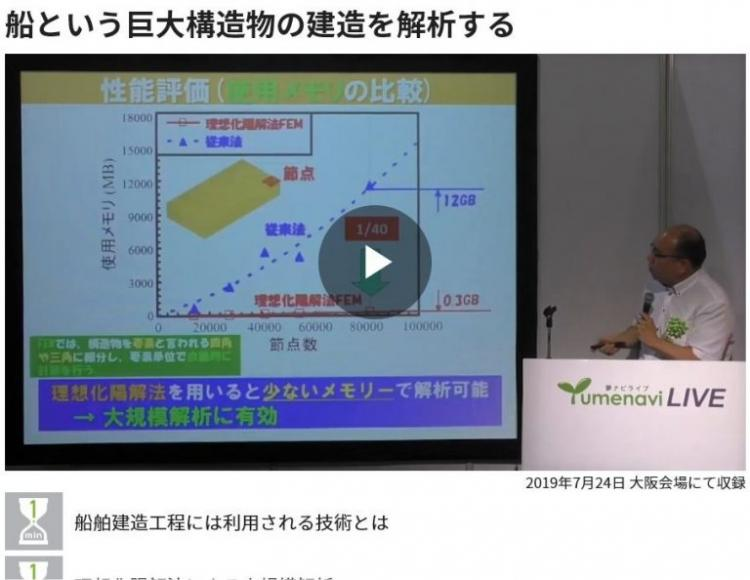
2019年10月19日
動画配信 ： 柴原先生が夢ナビライブにて講演した「船という巨大構造物の建造を解析する」が動画配信されました。
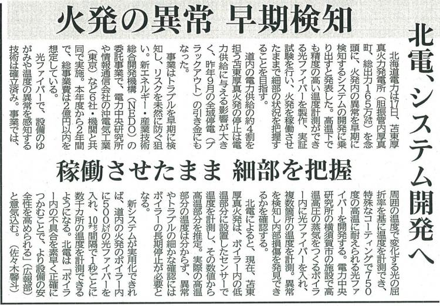
2019年9月18日
NEDO事業に採択された共同開発に関する記事が各紙面に掲載されました。
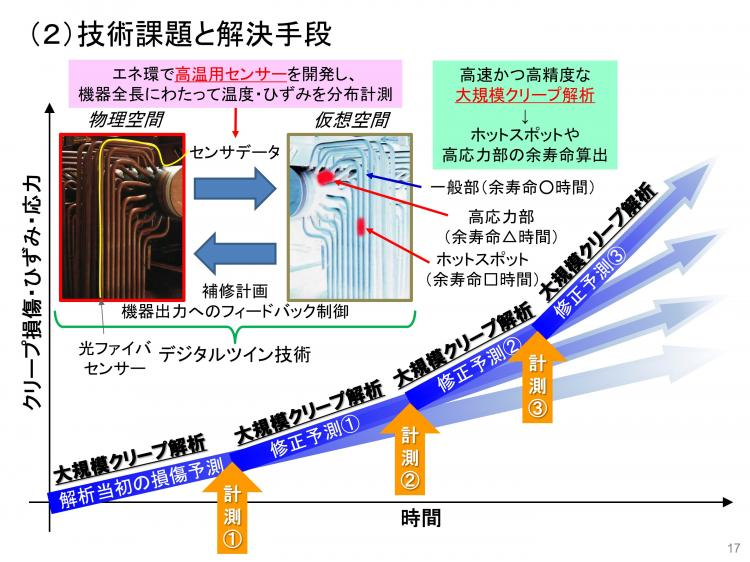
2019年9月17日
プレスリリース：柴原研究室が共同開発している「従来法での計測不能領域を革新的手法により計測可能にする産業プロセス用センサー」がNEDO エネルギー･環境新技術先導研究プログラムに採択されました。
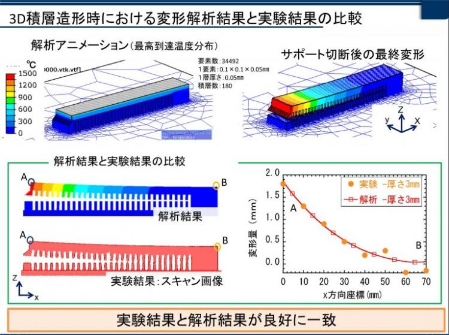
2019年8月6日
柴原研究室 橋詰光らが特許申請(金属積層造造形の力学解析)(権利化・国内移行)を行いました。
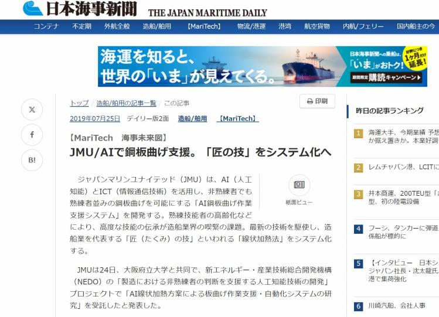
2019年7月24日
NEDO事業に採択されたAI線状加熱に関する研究内容が各種Webニュースに掲載されました。
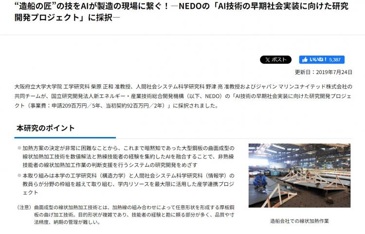
2019年7月23日
NEDOの「AI技術の早期社会実装に向けた研究開発プロジェクト」に採択されました。
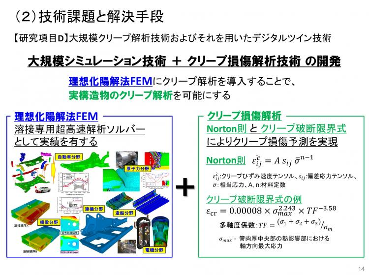
柴原研究室等が開発している「超高温設備の革新的オンライン監視システム」がNEDO先導研究プログラム事業に採択されました。
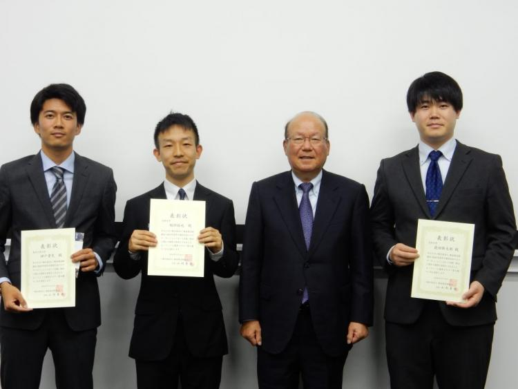
2019年6月12日
元柴原研究室(現大阪大学接合研麻研究室)の前田新太郎が軽金属溶接協会2019年度年次講演大会において優秀ポスター賞を受賞しました。
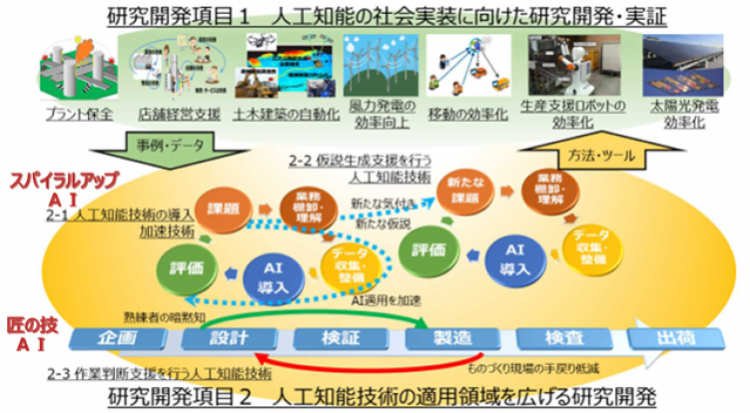
2019年5月15日
柴原研究室、JMU等が共同開発している「AI線状加熱による板曲げ作業支援・自動化システム」がNEDO事業に採択されました。
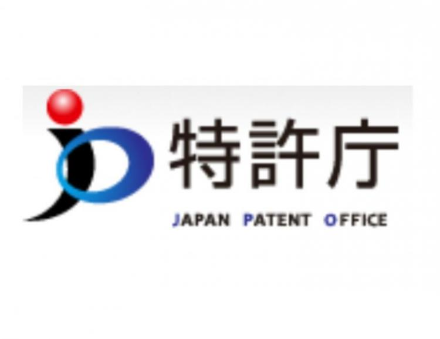
2019年5月13日
本藤祐佑らが耐高温割れ性溶接ワイヤに関する特許申請を行いました。
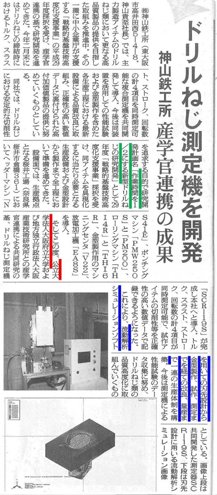
2019年4月11日
柴原研究室らが共同開発している「ドリルねじ測定器」が各記事に掲載されました。
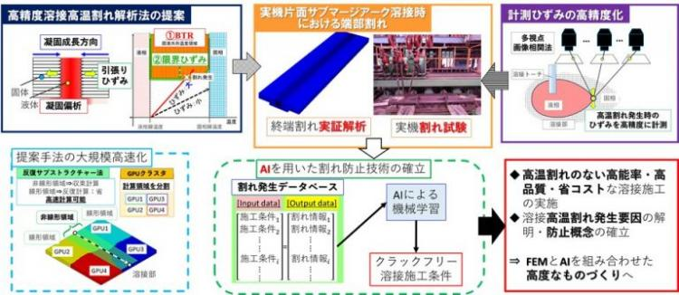
2019年4月1日
「AIを用いた高温割れ防止技術」が 平成31年度 文部科学省 科学研究費 基盤研究(B) に採択されました。